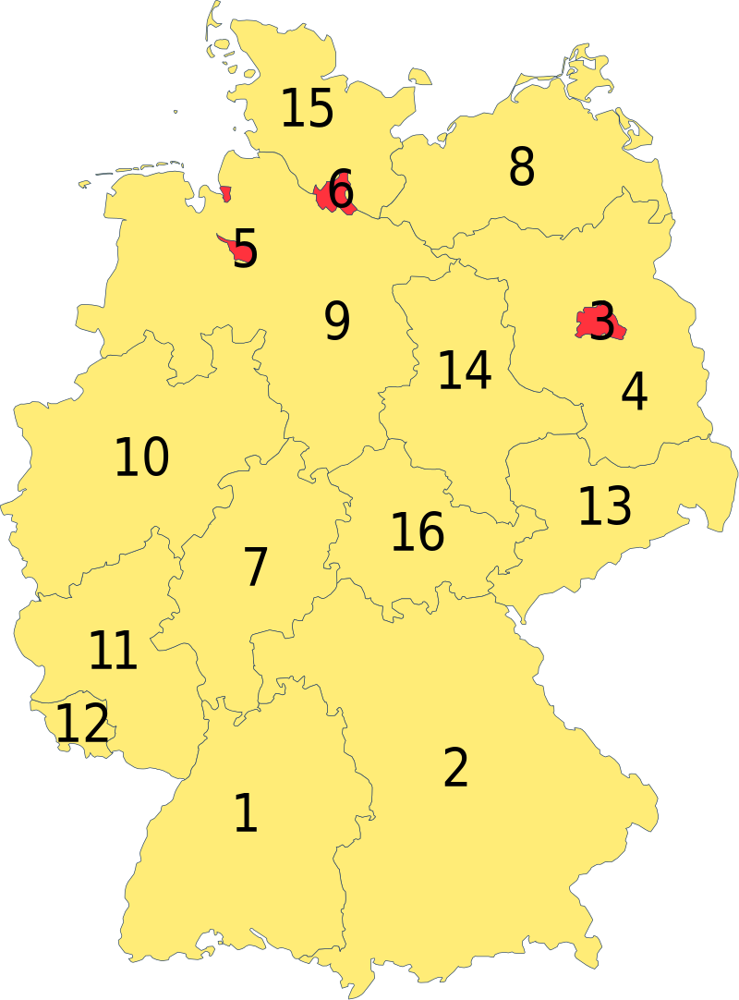

NAV
States with the letter "B"
States with the letter "H"
States with the letter "M"
States with the letter "N"
States with the letter "R"
States with the letter "T"

Letter B
Berlin
Bayern (Bavaria)
Baden-Württemberg
Brandenburg
Bremen
Back to NAV
Letter H
Hamburg
Hessen
Back to NAV
Letter M
Mecklenburg-Vorpommern
Back to NAV
Letter N
Niedersachsen (Lower Saxony, my home)
Nordrhein-Westfalen (North Rhine-Westphalia)
Back to NAV
Letter R
Rheinland-Pfalz (Rhineland-Palatinate)
Back to NAV
Letter S
Sachsen (Saxony)
Sachsen-Anhalt (Saxony-Anhalt)
Schleswig-Holstein
Saarland
Back to NAV
Letter T
Thüringen (Thuringia)
Back to NAV
Back to the beginning.